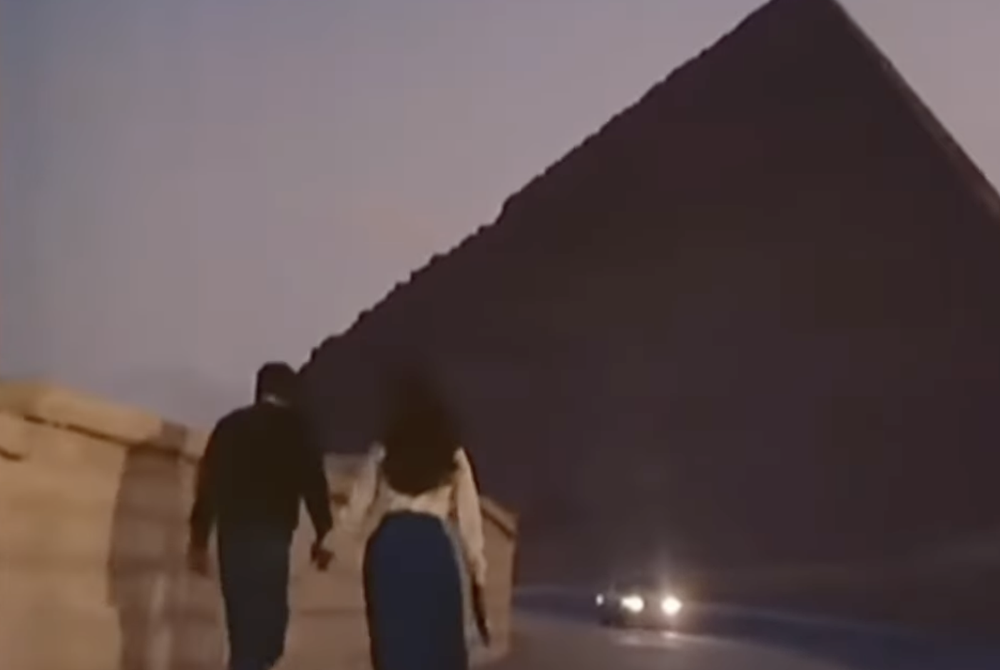
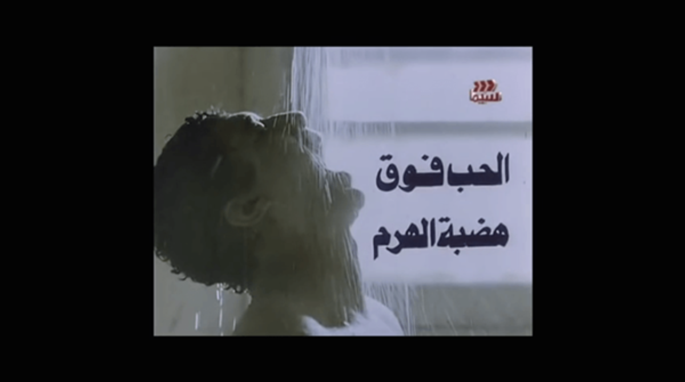
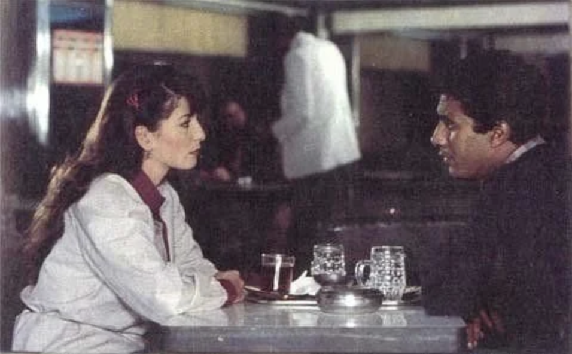

Atef al-Tayeb's Al-Hob Fawqa Hadabit al-Haram (Love Over the Pyramid Plateau, 1986)
Based on a short story written by Naguib Mahfouz, published as part of a collection of short stories in 1979, Atef al-Tayeb's sixth feature film, Al-Hob Fawqa Hadabit al-Haram (Love Over the Pyramid Plateau, 1986), charts out a young man's desperate attempt to fulfill his sexual desires without slipping into sin or running afoul of the law.
Although Tayeb's film is set a decade later than Mahfouz's story (adapted for the screen by Mostafa Moharam), they both trace out the crushing economic crisis of the 1980s to its original source: the reckless, corrupt and incompetent liberalization Anwar Sadat initiated in the early 1970s. Indeed, almost all of Tayeb's films explore the resulting decimation of the middle class that had risen under Gamal Abdel Nasser's expansion of welfare, access to education, healthcare, employment and public services. Sadat's desire to create a new class that was complicit with his policies — which essentially meant reliance on self-enrichment without regard for its social or economic impact — was logical as the political fealty of the middle class lay with Nasser, many of whose policies were beginning to become economically unviable for the state.
In the first instance, at the beginning of the film, he is woken by his mother from a dream in which he is hitching a ride with an older lady who takes him to the pyramids as a relatively private place for an amorous dalliance. The implication is that he may be continuing to pleasure himself in the privacy of the shower. In the second scene, at the nudging of his friend, Aly tries to consummate his fantasy with an older woman, but after a night of drinking and smoking hashish he fails, and the shower scene is imbued with the sense of a purifying ritual, casting away the smudge of alcohol and reckless behavior.
Eroticizing the male body in this way seems significant, and the fact Zaki that was one of comparatively few dark-skinned lead actors, frequently presented as a stereotypical underdog early in his career (there is no racial continuity in the film — Aly's parents and siblings are light-skinned), raises the stakes further. These scenes raise questions about what we think is attractive and why, and the power dynamics underlying these desires.

Ahmed Zaki as Aly, the frustrated protagonist
Between the two shower scenes, Love Over the Pyramid Plateau effects a triple-pronged attack on the state, its laws and society for repressing any possibility of relationships outside of the patriarchal moral order as mediated by capitalist interests.
By pointing out its inherent moral hypocrisy, the film shows how society in collusion with the police state controls the bodies and sexualities of its subjects. It also points out the misery of the erstwhile middle class through several clear and damning statements. It is a deeply political film, even if its premise is sexual frustration and failed romance.
Aly is a frustrated law graduate employed in a public sector company who falls for his colleague Rajaa (played by apparently naturally silly and timid Athar al-Hakim), who is given more of a role than in Mahfouz's original story. They try throughout the film to get married and consummate their love, in spite of financial obstacles in the form of the petty demands of proper marriage (trousseau, dowry, wedding ring) and the declining economic statuses of their families (both their fathers are former state bureaucrats). In a subplot, told without much judgement, Aly's sister Noha (the immortally oppressed Hanan Soliman) ends up marrying their neighborhood plumber Ahmed (a delightful Nagah al-Mugy), who, despite being of a lower social class, has benefited from the rising informal economy of the time.
As in his previous film, Al-Zammar (The Piper, 1985), Tayeb is more adept at capturing external scenes than internal ones, though with the aid of cinematographer Said al-Shimi, rather than Mahmoud Abdelsamie. The film's setting is downtown Cairo, and we are presented with a city that looks as unflatteringly decrepit, dusty and world-weary as its inhabitants. Most external scenes were shot in actual locations in downtown, with casual pedestrians looking back at his camera in bewilderment mixed with curiosity and ennui. Whether or not Tayeb intended to shock the walking public, it reinforces the voyeuristic feeling of gazing at something one shouldn't. The sense of intrusion on Aly and Rajaa as they navigate the unforgiving city and its inhabitants is highlighted by the grimy, congested streets. A desire to escape the city and its reality becomes inevitable and the couple start talking about emigration (to the Gulf, of course), but instead opt for the pyramids as somewhere less congested and therefore suitable for their long-awaited intimate moment, leading to the film's climax.

The pyramids as the setting for the film's climactic scene
The film invokes, by content not by name, article 278 of the Penal Code, which to this day defines acts of public indecency and makes them punishable by one year in prison or a fine of LE300. This section of the penal code, which involves laws pertaining to the criminalization of rape, adultery and public indecency, is among the most regressive and morally authoritarian. It stipulates that even if an act was not witnessed by anyone, as long as it took place somewhere public with the potential of being seen, the "perpetrators" can be indicted and sentenced. And Egyptian courts have often wielded a very broad interpretation of what constitutes a public offence. In 2015, for example, the former head of the Court of Cassation, Abdel Moniem al-Seihemy, said an act of public indecency could be something as trivial as a kiss.